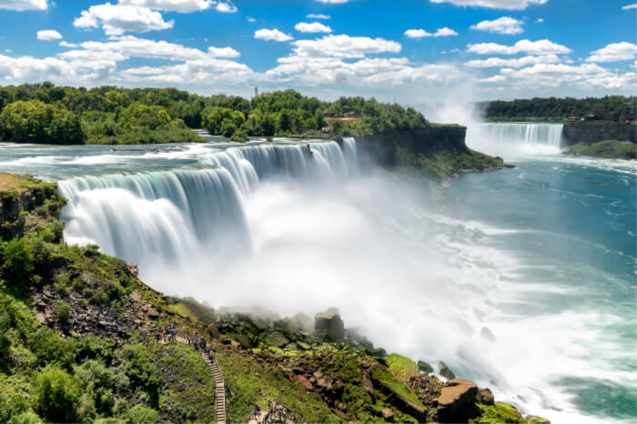
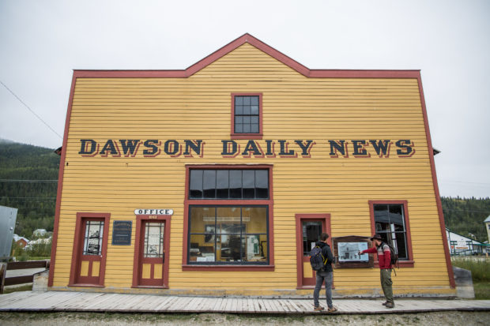

Kanada może i jest mniej znana niż jej południowy sąsiad, ale jest tak samo, jeśli nie bardziej, piękna i pełna atrakcji turystycznych. Jej krajobraz jest mocno urozmaicony: w południowo-zachodnim zakątku kraju dżungla sąsiaduje z pustynią, a na wschodzie rozciągają się bujne sady. Kanada, podobnie jak USA, to mozaika kulturowa, gdzie, obok przeważających w społeczeństwie obywateli o korzeniach brytyjskich i francuskich, żyją mniejszości zachowujące tradycje swych przodków.
CO WARTO ZOBACZYĆ?
WODOSPAD NIAGARA

Jest to bez wątpienia wizytówka Kanady. Znajduje się on na granicy Kanady i USA, jednak to po stronie kanadyjskiej stanowi bardzo popularną atrakcję turystyczną. Największe wrażenie robi w nocy, podświetlany różnokolorowymi światłami, lub zimą, kiedy woda tworzy sople różnych rozmiarów i kształtów.
ICEFIELD PARKWAY
Ponad 200-km malownicza droga, która wiedzie przez kanadyjskie Góry Skaliste. Droga prowadzi przez 2 piękne Parki Narodowe – Banff National Park i Jasper National Park. Po drodze można podziwiać wspaniałe góry, wodospady i błękitne jeziora, oraz wybrać się na jeden z setek szlaków.
DAWSON CITY

Jedno z najlepiej zachowanych miasteczek z czasów gorączki złota. W czasach świetności żyło tu 40 tysięcy ludzi a miasto było nazywane Paryżem północy. Dziś dalej nie ma tu asfaltu, a chodząc między westernowymi budynkami można przenieść się w czasie. Warto kupić w miasteczku miski do szukania złota i spróbować swoich sił. Oficjalne miejsce w którym można legalnie szukać złota jest jakieś 20 minut od miasteczka, nad rzeką.
PROPONOWANE HOTELE:
Wszystkie hotele są położone w pobliżu wodospadu Niagara